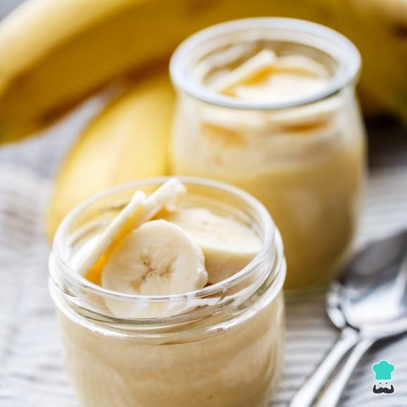

Sobremesa de banana

Sobremesas de sabor morango são uma delícia e agradam facilmente a todo o mundo, não é mesmo? Neste caso estou apresentando uma receita de sobremesa com gelatina de morango que não demorará mais de 15 minutos de preparo, pois o processo é bem simples.
Ingredientes:
- ½ litro de leite
- 2 ovos
- 4 colheres de sopa de açúcar
- 1 envelope de gelatina de morango (de 85 g)
- chantilly pronto
Modo de Fazer:
- Para começar, bata o leite, os ovos e o açúcar no liquidificador ou numa panela. Leve ao fogo abaixo e fique mexendo até virar um creme (demorará cerca de 10 minutos).
- Retire o creme do fogo e adicione a gelatina em pó, sem dissolver previamente. Misture muito bem, para incorporar a gelatina perfeitamente no creme.
- Coloque este creme de morango em copinhos ou tacinhas individuais, preenchendo somente 2/4 da capacidade. quartos de sua capacidade. Deixe esfriar e reserve na geladeira por, pelo menos, 4 horas antes de servir.
- No momento de servir, complete sua sobremesa de morango simples adicionando uma porção de chantilly pronto - se preferir prepare chantilly caseiro - e tenho a certeza que todos vão gostar (sobretudo as crianças)! Experimente e conte nos comentários o que você achou.